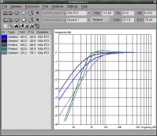

GnomeSpeakers
About |
History |
Screenshots |
Download |
Support |
Documentation |
gspeakers@Sourceforge
About
GnomeSpeakers (short name: gspeakers) is a Gnome-based loudspeaker design
program. It's built using the
Gtkmm and Gnomemm libraries (C++ wrappers for the Gtk+ and Gnome libraries
http://gtkmm.sf.net). The
reason I started to work on this program was that I could not find any other
Gtk/Gnome based loudspeaker design program. The question I had to ask myself was:
How can I make it easier to design loudspeakers? I decided that GnomeSpeakers
should implement features that makes it easy and quick to plot frequency responses
for a lot of different speakers in a lot of different boxes. However, in the first
version only a (pretty large) subset of these features are implemented.
The program is very
modular so it is very easy to add new features. I suppose it'll only take a few
0.x-releases before this is ready for the great version 1.0.
What about filters/crossover networks?
I have decided to not include a filter/crossover-designer in this program. Since I
consider the filterdesigners usually included in loudspeaker design program too
simple (as I'm a fourth year electronics student and know some about filter design,
however, not as much as i would like to know)
I want a filter design program to be very powerful. And still it should be easy to
use since I want everyone to be able to use my program.
I'll probably create a filter
design program as a separate project. Anyone with ideas for such a program should
contact me. I really need some advice and I want to discuss the GUI with someone.
History
Back in 1995 (i think it was 95) I started a programming course in school. The
programming language was Pascal and the operating system was MS Dos. I wanted my own
project to work on and since I was intrested in building loudspeakers a loudspeaker
design program was the obvious choice for a programming project. Later I got more
intrested in GUI-programming and switched to windows and made one version of the
program for windows (which I called BassCAD). The result was something that I
called a BETA-version but you should probably call it a pre-alpha...:-) However,
last time I touched BassCAD was approximately four years ago. Last novermber it
was time for a new project and a new name. GnomeSpeakers is the new project I'm
working on. Please try it and tell me what
you think about it.
Screenshots
Screenshots:

Larger screenshot
Download
gspeakers-0.1
Please mail me (dss at home dot se)what do you like
about the program and also what you don't like. Now is
the right time for me to make big changes to the program and unless I get negative
feedback I'll suppose that everyone likes it.
Support
The best way to get quick support on gspeakers is to send a mail to me
(dss at home dot se). I'll try to answer
questions as soon as possible. If I get a lot of mails I'll set up a
mailinglist.
Documentation
This is a short tutorial on how to use gspeakers. The idea of the user interface
(see screenshots) is that you store speakers and enclosures in xml-files.
Internally the data is stored in structures but you only have to care about the
xml-file.

Figure 1: the speaker toolbar
1: Create new speaker, press this button to clear the toolbar and prepare to
add a new speaker. Press this button if you want to add a speaker.
2: Create new xml-file. Press this button if you want to start on a new set of
speakers.
3: Open xml-file. Opens a file you've created earlier or a file downloaded from
somewhere (perhaps here later).
4: Save changes you made, for example if you add a speaker, press this button to
save that speaker to the xml-file.
5: Save xml-file as...save the xml-file with a new filename.
6: Remove current speaker from the toolbar.
7: This is the xml-file you're working with.
8: This is name of the currently selected speaker.
9: Vas is a parameter for the speaker you can find in its datasheet or in most
retailors catalouges.
10: Fs is the resonanse frequency of the speaker.
11: Qts is one damping-factor (i don't relly know exactely what this is)

Figure 2: the enclosure toolbar
1: Create new enclosure, press this button to clear the toolbar and prepare to
add a new enclosure.
2: Create new xml-file. Press this button if you want to start on a new set of
enclosures.
3: Open xml-file. Opens a file you've created earlier or a file downloaded from
somewhere (perhaps here later).
4: Save changes you made, for example if you add an enclosure, press this button to
save that enclosure to the xml-file.
5: Save xml-file as...save the xml-file with a new filename.
6: Remove current enclosure from the toolbar.
7: This is the xml-file you're working with.
8: This is the name of the currently selected enclosure.
9: Here you can select type of box, for now you can choose between two types of
boxes, ported/vented and sealed/closed box. More types will be added later but i
want to improve the functionality of the program first.
10: This is the volume (in litres) of the encolsure.
11: This is the resonanse frequency of the enclosure.

Figure 3: the simulation toolbar
1: Create a plot of the frequncy response for the currently selected speaker in
the currently selected enclosure.
2: This will create a plot of the frequency response for the currently selected
speaker in each of the enclsures in the enclosure toolbar. This is a powerfull
feature that should be convenient when you want to simulate the performance for
a lot of different speakers in a lot of different enclsures.
3: The same as 2 but here you take each speaker and plot the frequency response
for each speaker in the currently selected enclosure.
4: Plot each speaker in the corresponding box. For example, if you got 3 speakers
in the currently opened speaker xml file and 3 enclosures in the currently opened
enclosure xml-file then this command will plot frequency response for speaker #1 in
enclosure #1, speaker #2 in enclosure #2...
5: Remove the plot you selected in the list of plots.
6: Remove all plots from the greaph.
7: Set enclosure volume (and for sealed enclosure the resonance frequency too) to
the optimized volume for the currently selected speaker. The optimized volume is
the volume that gives the speaker a flat frequency response.
8: Open the properties dialog.
About |
History |
Screenshots |
Download |
Support |
Documentation |
gspeakers@Sourceforge
© Daniel Sundberg, dss@home.se